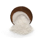

Products
We Support the global trade on the Geo Products, with our whole hearted green globe Products.

Coconut
Coconut is in fact a nutritious superfood that is rich in fiber, vitamins and minerals. It's incredibly healthy, nourishing and versatile. Coconut is rich in antioxidants, which help to slow down the aging process and protect the body from free-radical damage.

Copra
Copra, dried sections of the meat of the coconut, the kernel of the fruit of the coconut palm (Cocos nucifera). Copra is valued for the coconut oil extracted from it and for the resulting residue, coconut-oil cake, which is used mostly for livestock feed.

Coconut Activated Charcoal
Activated coconut charcoal is made by burning coconut shells at a very high heat then activating the charcoal in a furnace at high temperatures. This creates millions of tiny pores on the surface. That is why it is used for water filtration. Taken orally, activated coconut charcoal’s pores can bind toxins and gas to escort them out of the body.

Coconut Oil
Coconut oil, or copra oil, is an edible oil extracted from the kernel or meat of mature coconuts harvested from the coconut palm. It has various applications like; protect your skin from UV rays, Increase your metabolism, Cook safely at high temperatures, Improve your dental health, Relieve skin irritation and eczema, Improve brain function, Make healthy mayonnaise, Moisturize your skin.

Desiccated Coconut Powder
Desiccated coconut is an ideal source of healthy fat that contains no cholesterol and contains selenium, fiber, copper and manganese. One ounce of desiccated coconut contains 80% healthy, saturated fat. Selenium is a mineral that helps the body produce enzymes, which enhance the immune system and thyroid function.

Coir Fiber
Coir fiber is the natural fiber extracted from the husk of the coconut. There are generally two types of coir fiber the brown fiber from mature coconuts and the finer white fiber from immature green coconuts. Coir fiber is one of the most lignin-rich natural fibers. This will be the raw material for many products like, Coir Rope, Coir Mattress, Coir Mats, Coir carpets etc.

Coco Peat (or) Coir Pith
Coco peat is also known as coir pith is a bi-product produced while processing the coconut husks for extraction of fiber. The collected Coco peat undergoes the various processes such as washing, drying and screening after which it is compressed into 5kgs or 650gms according to customer’s requirement.

Coir Husk Chips
Coir husk chips are manufactured from the fibrous husk that surrounds the immature Green coconut Cut into small chip like Pease’s. Coir husk chips effectively used in substrate for growing orchid flowers along with other plants that form aerial roots and keeps high water capacity.
About Us
Our Location Advantage
We are proudly based in Peravurani – Thanjavur, Tamil Nadu, a region renowned as the Tropical Agricultural Belt and one of India’s premier Coconut farming zones. Known for its fertile soil, favorable climate, and abundance of organic cultivation, this region naturally produces high-quality crops and coconuts. Being located in such a prime agricultural hub allows us to maintain full control over our raw materials — from sourcing to processing — ensuring that every product we deliver meets the highest standards of purity, consistency, and quality. This strategic location gives us a distinct edge in delivering premium coconut-based products trusted by customers worldwide.
Our Offerings
We specialize in the supply of a diverse range of high-quality coconut products, including: Fresh Coconut Tender Coconut Coir Fibre Bales Coir Cut Fibre Bales Coco Peat (Coir Pith) Our commitment goes beyond just delivering products — we focus on providing cost-effective solutions backed by a rigorous quality plan and reliable after-sales support. Every product is a reflection of our dedication to consistency, customer satisfaction, and long-term partnerships.
Our Legacy of Coconut Products
Our legacy in the coconut industry began in 1978, rooted in a passion for quality cultivation and sustainable agriculture. With our own extensive coconut farms, we started as coconut merchants and traders, laying a strong foundation built on trust, integrity, and excellence. Over the years, we have evolved into a diversified manufacturer and exporter of premium coconut-based products, serving customers across domestic and international markets. Our product portfolio includes:
- Organic Coconuts
- Dry Coconut (Copra)
- Organic Coconut Oil
- Coir Fibre
- Coir Pith Blocks
With over 25 years of manufacturing expertise, we recognized the growing global demand for sustainable agricultural substrates and expanded into the production of high-quality Coir Pith Blocks, now trusted by growers, nurseries, and agricultural partners worldwide.
A Legacy of Leadership
We are a family-owned, vertically integrated business, proudly spanning four generations of dedication, innovation, and excellence in the coconut industry. Currently led by Mr. S. Muthuvairavan (Director), the company has experienced consistent growth under his visionary leadership. His ability to adapt to evolving market trends while preserving traditional values has been instrumental in shaping our journey. This hands-on, personal approach to business ensures that even the smallest customer concerns are addressed with care and commitment. Our story began with Mr. Sundharam, was carried forward by his son Mr. Muthuvairavan (Director), and now enters a new era with Mr. Madhusudhanan (Managing Director) — a third-generation leader with a Master’s degree in Science and over 13 years of experience in the software industry and 7 Years of experience in Coconut Products. His transition into the family business marks a strategic move to expand our operations globally, blending modern strategies with time-tested practices. Together, our multigenerational leadership continues to build on a strong foundation of trust, quality, and innovation — ensuring our legacy thrives well into the future.
Farms and Factory
Our commitment to sustainable agriculture and manufacturing allows us to provide the highest quality products to our customers.
{kind=link}
{kind=link}
{kind=link}
{kind=link}
{kind=link}
{kind=link}
{kind=link}
{kind=link}
{kind=link}
Product Specification
Geo Cocos Product Specification
Coconut
Brown Coconuts are mature fruits from the coconut palm. The outer shell has a coarse brown hair-like texture. Inside the shell is a cavity filled with clear juice, known as coconut water, and a layer of firm white meat.
- Size of each coconut will be 11 cms and above.
- Weight of each coconut will be 450 – 550 gms.
- Colour - Light brown and not white.
- Maturity of Coconut - Cut down from the tree once in 50 days . The Coconut pealed after 10 to 15 days.
- 25 pieces will be packed in one plastic bags . Net weight will be approx .13 kgs.
- Stuffing quantity in one 40 Ft Container 40000 - 45000 Pieces.
Copra
Dry Coconut is the endosperm of the coconut with the husk and shell removed. It consists of the white and fleshy edible part of the seed with an outer brown skin which is split into two parts and then dried to specified moisture level in the sun. Dry Coconut (or) Edible Copra is usually a perfect, well dried half cup of the coconut kernel and is used in various food preparations as well as a tasty nut.
| Parameters | Edible Copra | Milling Copra |
|---|---|---|
| Moisture | 5% max | 5% max |
| Broken, Wrinkled or Germinated Cups | 1% max | - |
| Mouldy Cups | Nil | 2% max |
| Discoloured | 2% max | - |
| Oil Content | 65% min | 65% min |
| Free Fatty Acid | 0.3% max | 0.3% |
Coconut Activated Charcoal
Activated charcoal is a fine, odorless, black powder often used in emergency rooms to treat overdoses. Its toxin-absorbing properties have a wide range of medicinal and cosmetic uses, It also used for Gold smelting process. People have long used activated charcoal as a natural water filter. Just as it does in the intestines and stomach, activated charcoal can interact with and absorb a range of toxins, drugs, viruses, bacteria, fungus, and chemicals found in water, etc.
| Coconut Shell Activated Carbon | Grade A | Grade B |
|---|---|---|
| Grain (Mesh) | 6 * 12 | 6 * 12 |
| Iodine Value (mg/g) | ≥ 1000 | ≥ 900 |
| Strength/hardness (%) | ≥ 98 | ≥ 96 |
| Moisture (%) | ≤ 10 | ≤ 10 |
| Ash (%) | 3 - 5 | 3 - 5 |
| The filling ratio (g/cm) | 0.45 - 0.55 | 0.5 - 0.55 |
Coconut Oil
Coconut Oil is extracted from Sun Dryed Copra & is 100% natural. It is unbleached, unrefined, and cold pressed. It is high in medium chain fatty acids & anti-oxidants which helps improve metabolism and immunity. Packed in a air tight bottle and Large Tin.
Nutrition Facts (Per 100 g)
| Nutrient | Amount |
|---|---|
| Energy | 897.8 kcal |
| Total Fat | 99.71 g |
| Saturated Fat | 94.31 g |
| Monounsaturated Fat | 3.85 g |
| Polyunsaturated Fat | 1.46 g |
| Trans Fat | < 0.1 g |
| Cholesterol | 0 mg |
| Sodium | 0 mg |
| Protein | 0 mg |
| Carbohydrates | 0 mg |
| Moisture | 0.16 g |
Desiccated Coconut Powder
Desiccated Coconut Powder is a minced and dried, fresh coconut kernel or meat, which can be consumed by vegans. A superior quality desiccated coconut powder is pure white color, and is free from black spots, yellow specks, or any other discolorations. It contains no cholesterol or trans fats while being rich in a number of essential nutrients, including dietary fiber, manganese, copper and selenium.
| Specifications | Fine Grade | General Grade |
|---|---|---|
| Moisture, % by mass, max. | 3 | 3 |
| Oil content, % by mass, min. | 65 | 65 |
| FFA (as lauric) % by mass, max. | 0.3 | 0.3 |
| So2 | < 50 mg/kg | < 50 mg/kg |
| Bulk density | 350 g/l±30 | 350 g/l±30 |
| Particle size, % by mass | 95min.<1.7mm 20max.>1.4mm | 95min.<2.8mm 20max.>2mm |
| Microbiological limits | ||
| (i) Total plate count | <10000 | <10000 |
| (ii) Yeasts & moulds | < 100⁄g | < 100⁄g |
| (iii) Coliforms | < 10⁄g | < 10⁄g |
| (iv) Salmonella | 0⁄g | 0⁄g |
Coir Fibre
Coir is a versatile natural fibre extracted from mesocarp tissue, or husk of the coconut fruit Generally fibre is of golden color when cleaned after removing from coconut husk; and hence the name ” The Golden Fibre”.
White Coir Fibre are harvested from the coconuts before they are ripe. These fibers are white or light brown in color and are smoother and finer. They are generally spun to make yarn that is used in mats or rope .Fresh water are used in the production of white coir.
Mature Brown Coir Fibre contain more lignin and less cellulose than fibres such as flax and cotton and so are stronger but less flexible. They are made up of small threads, each less than 0.05 inch (1.3 mm) long and 10 to 20 micrometres in diameter. Brown fibre is strong and rough.
- Color White & Brown
- Moisture - less than 15%.
- Impurity - less than 5%.
- Dust - less than 3%
- Packaging Standards for Local usage 30 kgs, 35 kgs Bale.
- Packaging Standards Export 120 Kgs Bale
Coco Peat / Coconut Chips
Coir Pith / Coco Peat is the best alternative to mined peat moss. Coco/ Coir is a proven natural alternative to mined peat moss, therefore using it helps slow down peat extraction from environmentally sensitive swamps worldwide. Used as a growing medium/potting medium coco peat. Peat moss harvesting is not Eco Friendly and Coco Peat is take from the Coconut husk it is total Eco Friendly.
| Parameters | 5Kg Block | 650grm Briquette |
|---|---|---|
| Weight | 5Kg +/- 0.5 Kg | 650grm +/- 50gm |
| Size | 30 x 30 x 13 cm | 20 x 10 x 5 cm |
| Expanded Volume Ltr | 70 to 80 | 9 to 10 |
| Compression Ratio | 5:1 | 8:1 |
| Expanded Volume | 13 to 15 lit / Kg | 13 to 14 lit / Kg |
| Packing | 210 Nos per pallet | 1920 Nos per pallet |
| Loading Capacity | 20 Pallets 20MTS / Loose Stuffing 26MTS | 20 Pallets 20MTS / Loose Stuffing 26MTS |
Coconut Husk Chips
Coconut Husk chips are nothing but the regular slicing of the husk of the coconut in uniform sizes. Coconut Husk (shell) are chopped or cut into size of 1 cm to 3 cm sizes of tolerance +/- 10%. It contains high quality Peat with Fibres to absorb more water. The Coco chips are suitable for the plants which require more Air Fill Porosity. Ideal for plants like Orchids. Coco Chips are free from weeds, prevents insects & harmful fungi.
| Parameters | Unwashed | Washed |
|---|---|---|
| Electrical Conductivity | > 1.0 mS/cm | < 0.65 mS/cm |
| pH value | 5.4 to 5.8 | 5.6 to 6.8 |
| Impurities | < 5% | < 5% |
| Moisture | 10 – 15% | 10 – 15% |
| Compression Ratio | 5:1 | 8:1 |
| Fibre Content | < 10% | < 10% |
| Packing | 210 Nos per pallet | 210 Nos per pallet |
| Loading Capacity | 20 Pallets 20MTS / Loose Stuffing 26MTS | 20 Pallets 20MTS / Loose Stuffing 26MTS |
Contact
If you need help related to the Coconut Products, please reach support team for assistance. Our support team will be available in a short time.
-
Plot No. 100/5,
Opp Gov Arts & Science College,
Mudachikkadu, Peravurani,
Thanjavur, Tamilnadu,
India - 614804. - +91 960 0092 228
- info@geococos.com